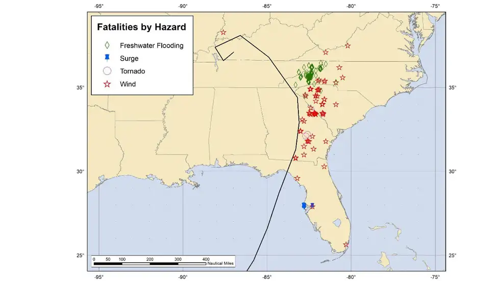
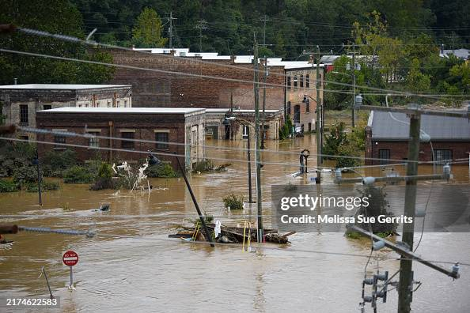

Most Shocking Things From Hurricane Helen's Final Report
The National Hurricane Center issued its final report on Hurricane Helene. Its death and damage tolls from Florida to the Appalachians are just a few of the stunning details.
Hurricane Helene was the deadliest tropical cyclone in the continental U.S. in 19 years and ranks among the nation's costliest weather disasters, just two findings of a just-released final report from the National Hurricane Center.
The 100-plus page report issued Wednesday detailed the meteorology, forecast performance and impacts of Helene from its birth in the Caribbean Sea on Sept. 24 to its dissipation over Tennessee four days later.
Here is a summary of the most shocking findings in that report.
Deadliest Continental U.S. Hurricane Since Katrina
Citing reports from both government and media sources, the NHC found at least 175 people were killed in the U.S. during Helene's flooding rain, high winds, storm surge or tornadoes. Another 71 people died after the storm was over due to such things as vehicle wrecks, medical emergencies and accidents during cleanup. Three other deaths associated with Helene were from unknown causes.
Compare that to the total death tolls from recent U.S. storms since Sandy that also claimed over 100 lives, according to NHC final reports:
Flooding's Death Toll Was High, But One Other Impact Was Also Particularly Deadly
Of the 175 deaths that occurred during the storm, 94 were attributed to rainfall flooding, which included floods triggered by landslides and debris flows. This higher fraction of deaths from flooding rain is consistent with recent findings from the NHC in U.S. hurricane deaths since 2013.Given the severity of the destructive flash flooding, that's not surprising
However, 65 deaths during Helene were attributed to its winds, the most for any mainland U.S. hurricane in at least 61 years, according to the NHC. 61 of those 65 wind deaths were due to falling trees, a long underreported danger in various high wind events, not just in tropical cyclones.
Particularly striking was the NHC map of these direct deaths by type below. Notice how all of these fatalities in Helene's case were to the right (in this case, east) of its track, typically the side with the strongest winds, heaviest rain and highest storm surge.
Direct deaths by weather type from Hurricane Helene from Sept. 24-27, 2024. Rainfall flood deaths include those from landslides, debris flows after heavy rainfall.(NOAA/NHC)
It's Among The Nation's Costliest
Helene was America's seventh costliest hurricane on record, according to an estimate from NOAA's National Centers for Environmental Information, responsible for an estimated $78.7 billion in damage.
Among the hurricanes Helene's damage total topped were 2004's Ivan ($34 billion), and 2005's Rita ($29.4 billion) and Wilma ($30 billion).
The Record Rainfall, Flooding And Landslides
Up to 30 inches of rain fell in the Southern Appalachians. That was both from Helene and a band of heavy rain well ahead of the storm as moist air was lifted over an old stationary front and by the mountains and foothills, themselves.
The flooding that resulted prompted the National Weather Service to issue 34 separate flash flood emergencies, their highest level of flood alert used only in cases of a severe threat to life and catastrophic damage.
At least 63 stream and river gauges set all time record crests during Helene, according to the NHC. Both the French Broad and Swannanoa Rivers in Asheville, North Carolina, shattered their previous record crests from 1916.
The U.S. Geological Survey mapped 2,015 landslides in the southern Appalachians during Helene, primarily in western North Carolina. Half of those slides affected buildings, roads or rivers.
Heavy rains from Hurricane Helene caused record flooding and damage in Asheville, N.C., on Sept. 28, 2024. Helene made landfall in Florida's Big Bend on Thursday night, with winds up to 140 mph and storm surges that killed at least 42 people in several states.(Melissa Sue Gerrits/Getty Images)
Helene's winds knocked out power to an estimated 7.4 million customers in the Southeast, according to an estimate from poweroutage.us.
Helene's wind damage potential was not only due to its Category 4 intensity at landfall. It was also because it moved fast - 30 mph forward speed when inland - and the ground previously soaked by heavy rain made it easier for trees to topple over.
Helene produced a 106-mph gust atop North Carolina's Mt. Mitchell, a 100-mph gust in Alma, Georgia, and a 99-mph gust in Perry, Florida. After Helene transitioned to a post-tropical remnant low, it still produced 60 to 70 mph wind gusts for a time in parts of Illinois, Indiana and Ohio.
A One-Story Storm Surge
Helene was both the strongest hurricane to landfall in Florida's Big Bend region and also the third hurricane to do so in a 13-month span.
Its large wind field pushed a storm surge 12 to 16 feet above ground level into Keaton Beach and Steinhatchee, where about 80 percent of buildings were destroyed. About seventy percent of Horseshoe Beach was also destroyed.
A bit farther south, Cedar Key measured a record 9.3 feet of inundation in 110 years of records, where 25 percent of homes were destroyed.
And in the Tampa-St. Petersburg metro, inundation from 6.5 to 7.3 feet were measured, topping a Superstorm 1993 record at Clearwater and a 1985 Hurricane Elena record at St. Petersburg.
Fourteen deaths were attributed to storm surge, according to the NHC.
A Pair Of Unusual Tropical Tornadoes
Among the 39 tornadoes spawned by Helene and its post-tropical remnants, two of them stood out.
While it only lasted 3 minutes, an EF3 tornado tore through about one city block in Rocky Mount, North Carolina. Tornadoes that strong from tropical storms and hurricanes are quite rare. From 1995 through 2023, only five of 1,782 tornadoes spawned by a hurricane, tropical storm or depression was of EF3 intensity, according to NOAA's Storm Prediction Center.
Another EF1 tornado in Cordova, South Carolina, was found to be 1,100 yards - five-eighths of a mile - wide. That's the largest tropical cyclone-spawned tornado in almost 30 years of such data, according to the NHC.
Editor's note: This article was adjusted to account for the National Hurricane Center adding another fatality in North Carolina in the aftermath of Helene.
Jonathan Erdman is a senior meteorologist at weather.com and has been covering national and international weather since 1996. Extreme and bizarre weather are his favorite topics. Reach out to him on Bluesky, X (formerly Twitter) and Facebook.